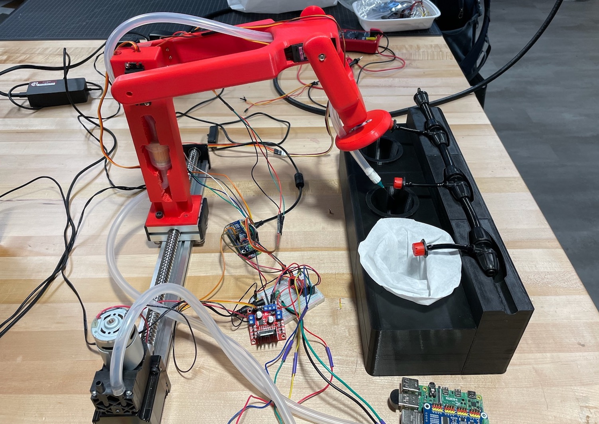

Introduction
All mechanical engineering students at Tufts are required to complete an intensive engineering design project in their final year. In September of 2021, I joined forces with a group of four other students on a project with the general intention of building some kind of robotic plant grower system. Our advisor for this project was the owner of midsize vegetable farm in northern New Hampshire named Tim.

Our Team
Skip to the Final Demonstration Video
Problem Definition
We began the design process through an interview with Tim, seeking to understand what factors were important to his success as a farmer and where he encountered challenges in his daily routine. Through a thorough analysis of our initial interview with Tim, we identified three key issues he experienced on his farm:
Producing crops throughout the year despite variable environmental conditions
Ex: Tim suffered a devastating loss of over half his lettuce crop due to disease during a wet spell in the previous year.
Coordinating crop harvesting with market demand for those vegetables
Ex: Methods that can increase vegetable shelf life such as better cooling and drying of harvested crops provide more flexibility in when crops can be planted and harvested.
Maximizing profit by considering the profit per square foot on the farm
Ex: Tim's farm avoids growing one and done crops like broccoli or cauliflower which take up space for long periods (~70 days) and then are worth only a small amount after being pulled from the ground.

Brainstorming a Problem Definition
Quality Function Deployment
After defining a set of problems, we began evaluating the needs of our stakeholders—farmers on small to midsize farms, like Tim—and prioritizing the relative importance of these needs. Using this list of needs, we sought to develop engineering requirements that we could include in our design that would meet these needs. A large part of this process was researching how already existing products met the needs we had identified to understand how they had translated those needs into their design and where they failed to appropriately address those needs. For example, one of the products we looked at was Farmbot—a CNC-type automated farming system. Although, fairly easy to use (user need: ease of use ✅), the immense size of the metal rig encompassing the planter box made this product impractical to move around on the farm and difficult to scale up (user needs: size and scalability ❌).

Identifying and Prioritizing Stakeholder Needs
Solution Set Convergence
In the works...

Set C before sponsor meeting

Final product after sponsor meeting
First Prototype
In the works...

Prototype V1

Prototype V1 Team
Second Prototype
In the works...

Prototype V2 Robot

Prototype V2 Water
Final Prototype
In the works...
Final Prototype

Testing Alex

Testing Sawyer

Final Soil Sensor

Final Robot

Final Pots with Box

Final Needle Suction
Presentation Day
In the works...
Final Team

Final Team V2
Reflection
In the works...

Small servo troubles
Final Demonstration Video
In the works...
Single Diode Rectifier - Real Time